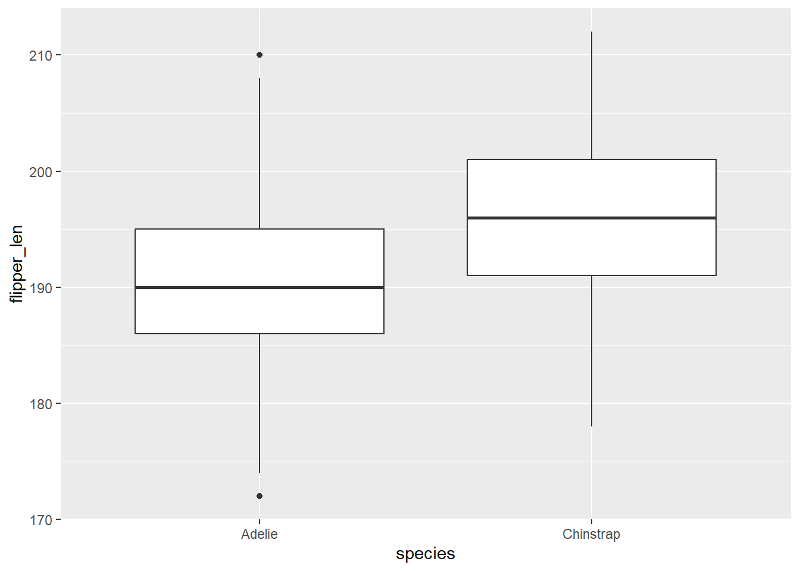
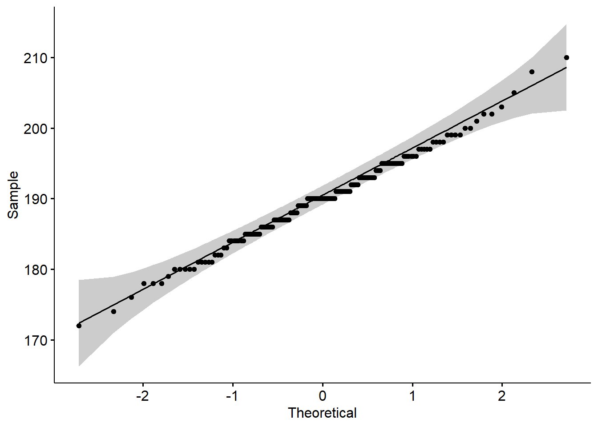
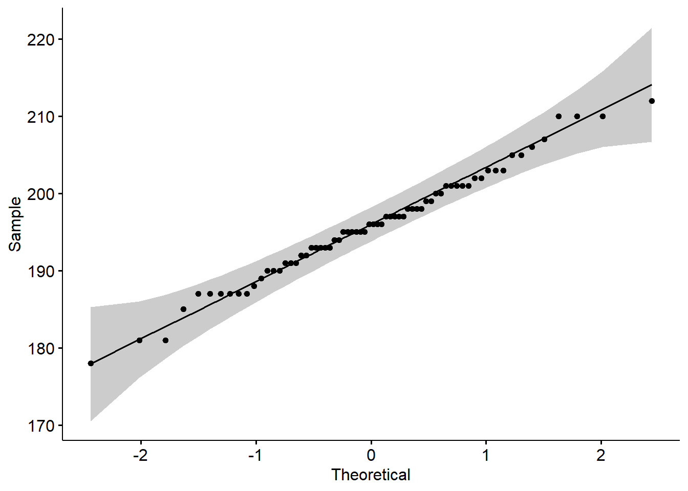
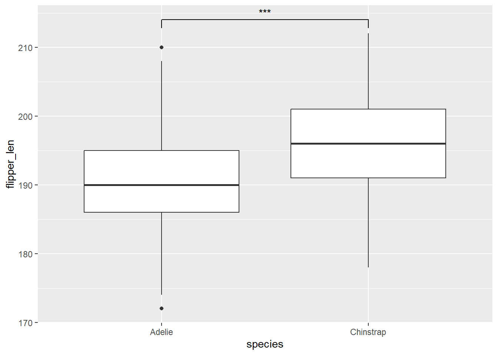
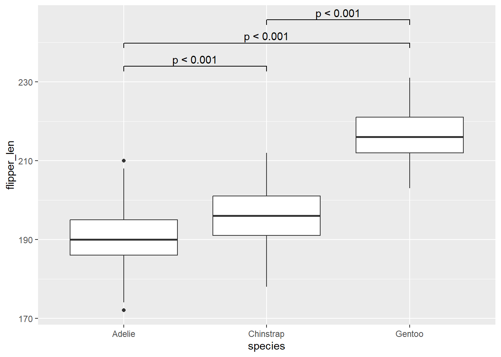
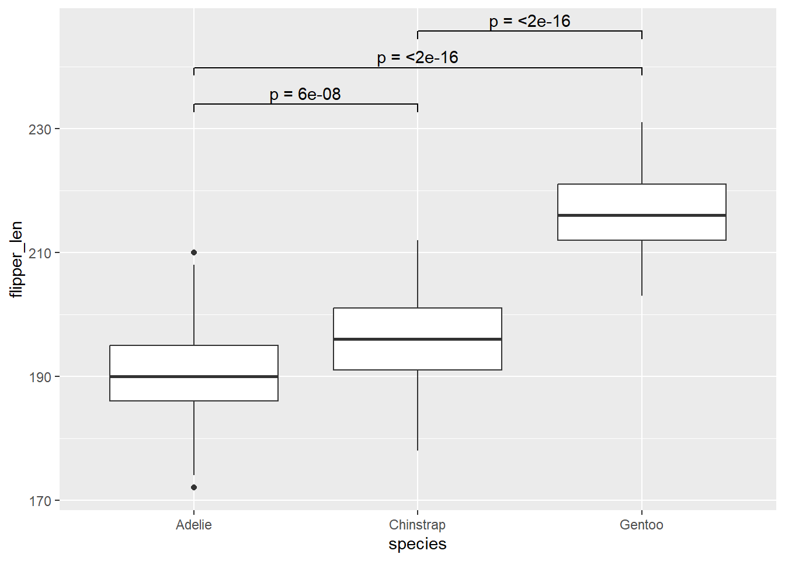
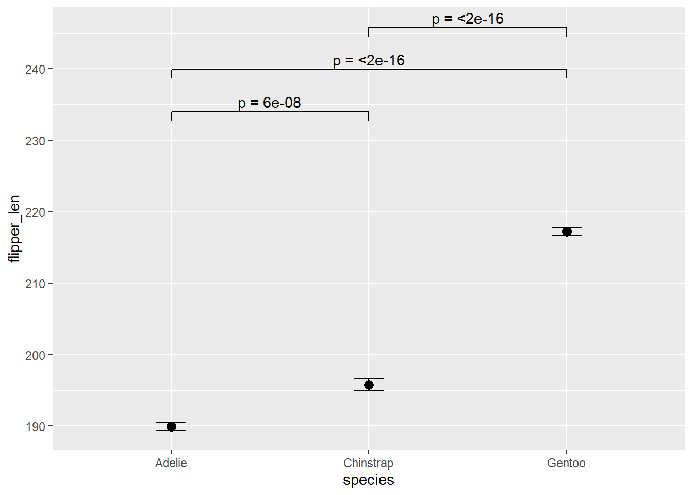
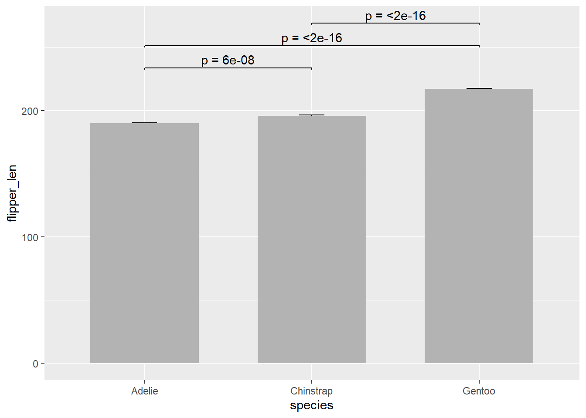
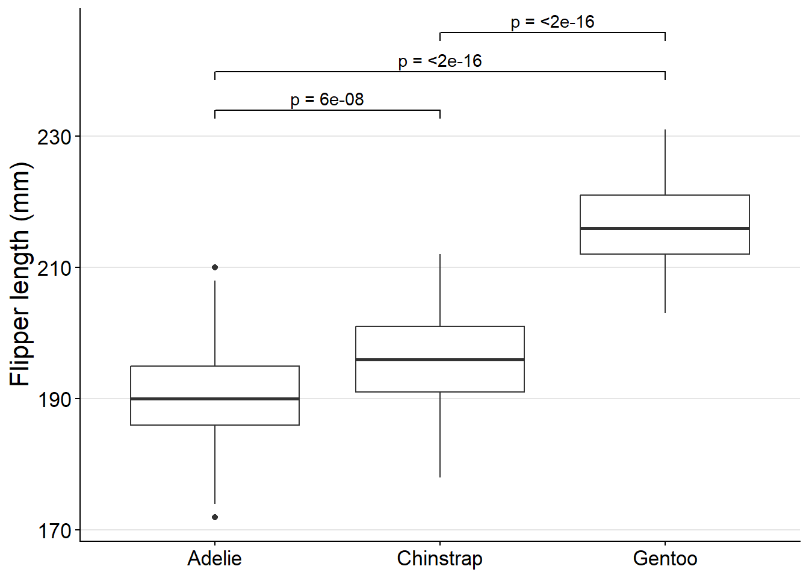
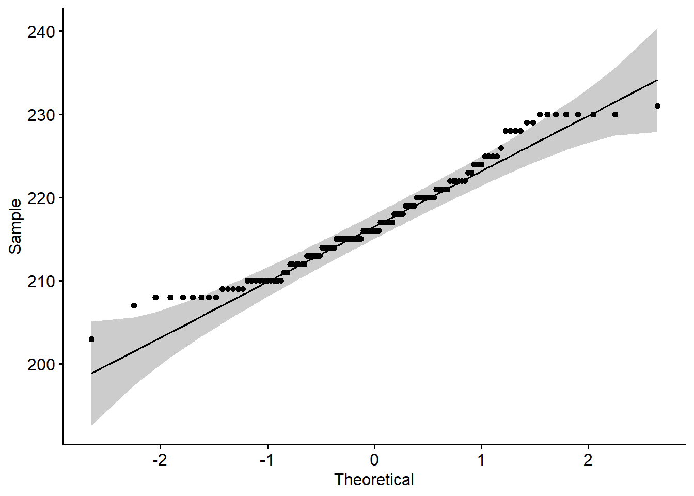

library(tidyverse)
library(ggsignif)
library(ggpubr)Solution to statistical test task
Get started
Part 1: Compare two species
1. Create a smaller version of the data
penguins_small <- penguins |>
filter(species %in% c("Adelie", "Chinstrap"))2. Plot the two species
ggplot(penguins_small, aes(x = species, y = flipper_len)) +
geom_boxplot()
The warning about 1 removed row comes from a missing value in flipper_len.
3. Check for normality
adelie <- filter(penguins_small, species == "Adelie")$flipper_len
chinstrap <- filter(penguins_small, species == "Chinstrap")$flipper_len
shapiro.test(adelie)
Shapiro-Wilk normality test
data: adelie
W = 0.99339, p-value = 0.72shapiro.test(chinstrap)
Shapiro-Wilk normality test
data: chinstrap
W = 0.98891, p-value = 0.8106ggqqplot(adelie)
ggqqplot(chinstrap)
Both Shapiro-Wilk tests give large p-values and the points in both QQ-plots follow the line. The flipper lengths of both species are roughly normally distributed.
4. Compare the means
t.test(adelie, chinstrap)
Welch Two Sample t-test
data: adelie and chinstrap
t = -5.7804, df = 119.68, p-value = 6.049e-08
alternative hypothesis: true difference in means is not equal to 0
95 percent confidence interval:
-7.880530 -3.859244
sample estimates:
mean of x mean of y
189.9536 195.8235 Mean flipper length was 5.9 mm shorter in Adelie than in Chinstrap penguins (Welch’s t-test, \(t_{119.7}\) = -5.78, p < 0.001).
5. Add the test result to the plot
ggplot(penguins_small, aes(x = species, y = flipper_len)) +
geom_boxplot() +
geom_signif(
comparisons = list(c("Adelie", "Chinstrap")),
test = "t.test",
map_signif_level = TRUE
)
Part 2: Compare all three species
1. Pairwise comparisons
pairwise.t.test(
penguins$flipper_len,
penguins$species,
pool.sd = FALSE
)
Pairwise comparisons using t tests with non-pooled SD
data: penguins$flipper_len and penguins$species
Adelie Chinstrap
Chinstrap 6e-08 -
Gentoo <2e-16 <2e-16
P value adjustment method: holm All three species differ in their mean flipper length (Holm-adjusted p < 0.001 for all pairs).
2. Plot with significance levels
Typing the p-values by hand
ggplot(penguins, aes(x = species, y = flipper_len)) +
geom_boxplot() +
geom_signif(
comparisons = list(
c("Adelie", "Chinstrap"),
c("Adelie", "Gentoo"),
c("Chinstrap", "Gentoo")
),
annotations = c("p < 0.001", "p < 0.001", "p < 0.001"),
step_increase = 0.1,
tip_length = 0.02
)
Extracting the p-values automatically
In the p-value matrix, the rows are Chinstrap and Gentoo and the columns are Adelie and Chinstrap:
pairwise_results <- pairwise.t.test(
penguins$flipper_len,
penguins$species,
pool.sd = FALSE
)
p <- pairwise_results$p.value
p Adelie Chinstrap
Chinstrap 6.049267e-08 NA
Gentoo 9.579154e-99 8.08089e-42comparisons <- list(
c("Adelie", "Chinstrap"),
c("Adelie", "Gentoo"),
c("Chinstrap", "Gentoo")
)
adjusted_p <- c(
p["Chinstrap", "Adelie"],
p["Gentoo", "Adelie"],
p["Gentoo", "Chinstrap"]
)
p_labels <- paste("p =", format.pval(adjusted_p, digits = 2))
p_labels[1] "p = 6e-08" "p = <2e-16" "p = <2e-16"Very small p-values are shown as “p = <2e-16”. The bonus section at the end shows how to get “p < 0.001” instead.
penguins_boxplot <- ggplot(penguins, aes(x = species, y = flipper_len)) +
geom_boxplot() +
geom_signif(
comparisons = comparisons,
annotations = p_labels,
step_increase = 0.1,
tip_length = 0.02
)
penguins_boxplot
For the fast ones
Other plot types
Mean ± standard error:
ggplot(penguins, aes(x = species, y = flipper_len)) +
stat_summary(
fun.data = mean_se,
geom = "errorbar",
width = 0.15
) +
stat_summary(
fun = mean,
geom = "point",
size = 3
) +
geom_signif(
comparisons = comparisons,
annotations = p_labels,
step_increase = 0.1,
tip_length = 0.02
)
Barplot with error bars:
ggplot(penguins, aes(x = species, y = flipper_len)) +
stat_summary(
fun.data = mean_se,
geom = "errorbar",
width = 0.15
) +
stat_summary(
fun = mean,
geom = "bar",
fill = "grey70",
width = 0.65
) +
geom_signif(
comparisons = comparisons,
annotations = p_labels,
step_increase = 0.3,
tip_length = 0.02
)
Make the plot look nice
penguins_boxplot +
labs(x = NULL, y = "Flipper length (mm)") +
theme_classic() +
theme(
text = element_text(size = 16),
panel.grid.major.y = element_line(color = "grey90")
)
Wilcoxon rank-sum test
wilcox.test(adelie, chinstrap)
Wilcoxon rank sum test with continuity correction
data: adelie and chinstrap
W = 2733.5, p-value = 3.028e-08
alternative hypothesis: true location shift is not equal to 0The Wilcoxon test comes to the same conclusion: flipper length was smaller in Adelie than in Chinstrap penguins (median 190 vs. 196 mm; Wilcoxon rank-sum test, W = 2733.5, p < 0.001).
Normality of Gentoo penguins
gentoo <- filter(penguins, species == "Gentoo")$flipper_len
shapiro.test(gentoo)
Shapiro-Wilk normality test
data: gentoo
W = 0.96219, p-value = 0.00162ggqqplot(gentoo)
The Shapiro-Wilk test gives a small p-value, but the QQ-plot shows only small deviations from the line. With 123 Gentoo penguins, the test detects even small deviations from normality. The t-test is fine here.
Bonus: Many groups
With many groups, typing the comparisons by hand gets tedious. Instead, you can turn the p-value matrix into a table with one row per comparison:
p_table <- pairwise_results$p.value |>
as_tibble(rownames = "group1") |>
pivot_longer(!group1, names_to = "group2", values_to = "p_adj") |>
drop_na(p_adj) |>
mutate(
label = if_else(
p_adj < 0.001,
"p < 0.001",
paste("p =", signif(p_adj, 2))
)
)
p_table# A tibble: 3 × 4
group1 group2 p_adj label
<chr> <chr> <dbl> <chr>
1 Chinstrap Adelie 6.05e- 8 p < 0.001
2 Gentoo Adelie 9.58e-99 p < 0.001
3 Gentoo Chinstrap 8.08e-42 p < 0.001as_tibble(rownames = "group1"): turns the matrix into a tibble and keeps the row names as a columndrop_na(): removes the empty upper triangle of the matrixif_else(): shows “p < 0.001” for very small p-values
map2() combines group2 and group1 into the list of comparisons:
ggplot(penguins, aes(x = species, y = flipper_len)) +
geom_boxplot() +
geom_signif(
comparisons = map2(p_table$group2, p_table$group1, c),
annotations = p_table$label,
step_increase = 0.1,
tip_length = 0.02
)